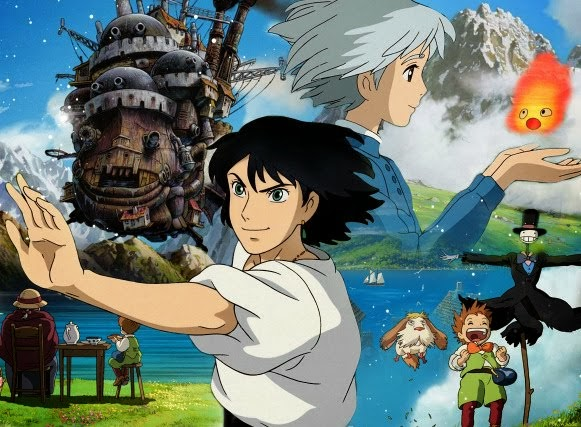
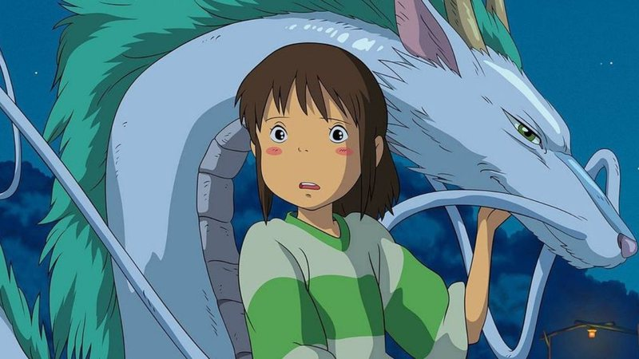

O castelo animado
Livre 2004 ‧ Fantasia/Aventura ‧ 1h 59m

Uma bruxa lança uma terrível maldição sobre a jovem Sophie transformando-a numa velha de 90 anos. Desesperada, ela embarca numa odisseia em busca do Castelo Andante, onde reside um misterioso feiticeiro que poderá ajudá-la a reverter o feitiço.
Princesa Mononoke
12 anos 1997 ‧ Fantasia/Aventura ‧ 2h 13m

A aldeia de Ashitaka é invadida por um estranho demônio, e quem resolve enfrentá-lo é o corajoso príncipe. Ele luta com o bicho e consegue matá-lo, mas antes fica com o braço ferido e é contaminado por uma maldição.
A Viagem de Chihiro
Livre 2001 ‧ Fantasia/Aventura ‧ 2h 5m

Chihiro e seus pais estão se mudando para uma cidade diferente. A caminho da nova casa, o pai decide pegar um atalho. Eles se deparam com uma mesa repleta de comida, embora ninguém esteja por perto. Agora, apenas Chihiro pode salvá-los.